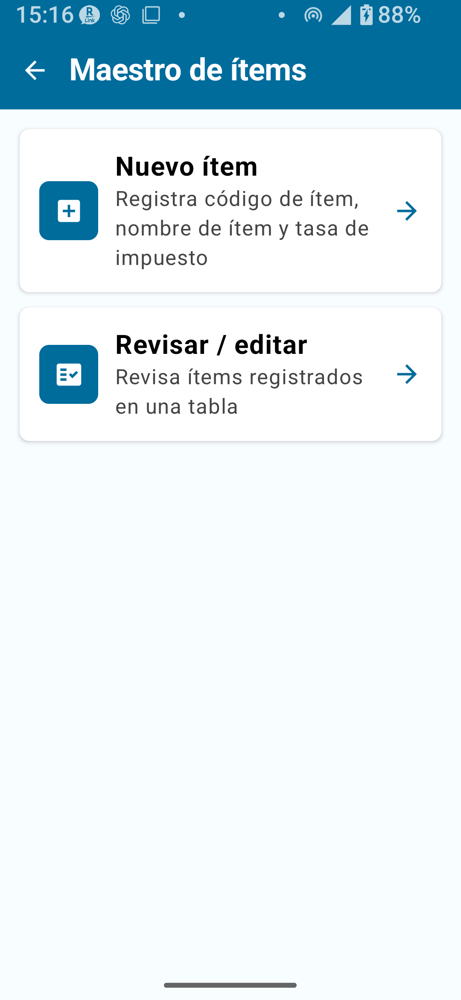
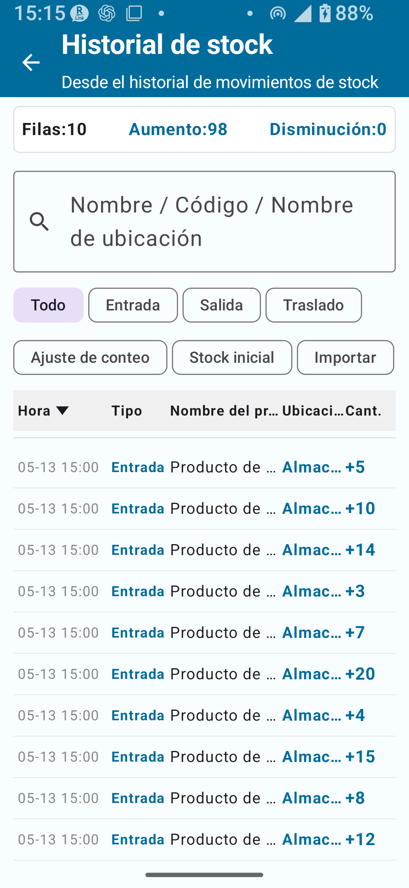
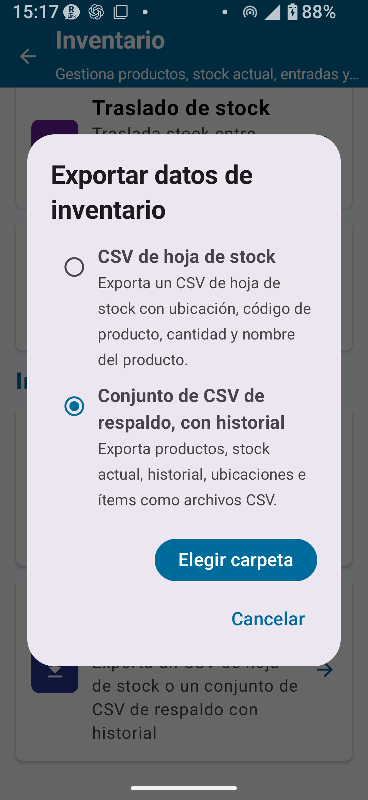

Descripción de la versión completa (Desbloqueo completo)
El Desbloqueo completo para existencias elimina todos los límites de registros de catálogo, entradas de historial y líneas de exportación, y activa todas las funcionalidades avanzadas no disponibles en la versión estándar. Las principales adiciones incluyen: gestión de múltiples ubicaciones (bodega, tienda, etc.), transferencia de existencias entre ubicaciones, aplicación directa de los resultados del inventario a las existencias, y respaldo/restauración completo en CSV.
- Registros de catálogo, entradas de historial y líneas de exportación ilimitados
- Campos de punto de reposición y precio en el Catálogo de productos
- Catálogo de categorías (gestión de clasificación de productos)
- Registro y gestión del Catálogo de ubicaciones
- Transferencia de existencias (mover cantidades entre ubicaciones)
- Aplicar datos del inventario físico a existencias
- Respaldo y restauración CSV (hoja de existencias + conjunto completo de CSV de respaldo)
- Respaldo de historial
- Edición directa del total acumulado registrado
- Reglas de código, reglas de ubicación y ajustes de cámara (ajustes compartidos de la versión completa)
- Opciones CSV ampliadas (selección de columnas y selección de modo de importación)
Diferencias con la versión estándar
| Funcionalidad | Gratuito | Estándar | Completo |
|---|---|---|---|
| Consulta de existencias | ✓ | ✓ | ✓ |
| Entrada / Salida | ✗ | ✓ | ✓ |
| Límite de registros de catálogo | 30 | 300 | Ilimitado |
| Transferencia de existencias | ✗ | ✗ | ✓ |
| Aplicar datos del inventario físico a existencias | ✗ | ✗ | ✓ |
| Catálogo de categorías | ✗ | ✗ | ✓ |
| Punto de reposición y precio | ✗ | ✗ | ✓ |
| Respaldo y restauración CSV | ✗ | Limitado | ✓ (conjunto completo) |
| Respaldo de historial | ✗ | ✗ | ✓ |
| Reglas de código y ubicación | ✗ | ✗ | ✓ (ajustes compartidos Completo) |
Integración con el Catálogo de productos
El Catálogo de productos es donde registras los productos reales cuyas existencias gestionas. Con el Desbloqueo completo, puedes agregar punto de reposición y precio a cada producto.
Campos clave del Catálogo de productos
| Campo | Descripción | Añadido en la versión completa |
|---|---|---|
| Código de producto / Código de barras | Identificador único del producto | — |
| Nombre del producto | Nombre del producto | — |
| Categoría | Clasificación del producto (seleccionada del Catálogo de categorías) | — |
| Precio | Precio de venta o costo del producto | ✓ |
| Punto de reposición | Cantidad mínima que activa el referencia para evaluar la reposición | ✓ |

Registrar o editar un producto
- Desde la pantalla de inicio, abre Gestión de catálogos.
- Selecciona Catálogo de productos.
- Toca la tarjeta de nuevo elemento o el botón Nuevo.
- Ingresa el código del producto, el nombre y la categoría. Opcionalmente ingresa precio y punto de reposición.
- Toca Guardar para registrar.
- Para editar un producto existente, ábrelo en la lista, realiza los cambios y toca Guardar.
- Producto: artículo individual en existencias (ej.: Bolígrafo rojo, Bolígrafo azul)
- Categoría: grupo de clasificación de productos (ej.: Papelería, Alimentos)
Catálogo de categorías
El Catálogo de categorías gestiona los grupos de clasificación usados para organizar los productos. Las categorías ayudan a filtrar y revisar el Catálogo de productos.
| Campo | Descripción |
|---|---|
| Código de categoría | Identificador único de la categoría |
| Nombre de categoría | Nombre de la clasificación (ej.: Alimentos, Ropa) |
| Clasificación | Grupo usado para organizar productos en listas y catálogos |
| Orden de visualización | Orden de clasificación en la vista de lista |

Registrar una categoría
- Ve a Gestión de catálogos → Catálogo de categorías.
- Toca la tarjeta de nuevo elemento o el botón Nuevo.
- Ingresa el código, el nombre y el orden de visualización.
- Toca Guardar.
Catálogo de ubicaciones
El Catálogo de ubicaciones es donde registras y gestionas los lugares físicos de almacenamiento de existencias. Al registrar múltiples ubicaciones — como bodega, tienda o estantes individuales — puedes rastrear las existencias por ubicación.
| Campo | Descripción |
|---|---|
| Código de ubicación | Identificador único de la ubicación |
| Nombre de ubicación | Nombre de la ubicación (ej.: Bodega, Tienda A) |
| Orden de visualización | Orden de clasificación en la vista de lista |
| Incluir en evaluación de reposición | Si está activo, las existencias de esta ubicación se incluyen en el total usado para decisiones de reposición en la Consulta de existencias |
| Activo / Inactivo | Las ubicaciones que ya no se usan pueden desactivarse sin eliminarlas |

Registrar una ubicación
- Ve a Gestión de catálogos → Catálogo de ubicaciones.
- Toca la tarjeta de nuevo elemento o el botón Nuevo.
- Ingresa el código, el nombre y el orden de visualización.
- Activa o desactiva Incluir en evaluación de reposición según sea necesario. Los nuevos elementos tienen este campo activo de manera predeterminada.
- Toca Guardar.
Transferencia de existencias
La transferencia de existencias mueve una cantidad específica de existencias de una ubicación a otra. Disponible solo en la versión completa.

Cómo realizar una transferencia de existencias
- En el menú Gestión de inventario, abre Transferencia de existencias.
- Selecciona la ubicación de origen (de donde saldrán las existencias).
- Selecciona la ubicación de destino (a donde llegarán las existencias).
- Encuentra el producto deseado escaneando el código de barras o buscando por nombre.
- Ingresa la cantidad a transferir.
- Revisa los detalles y toca Confirmar.
Historial de existencias
El Historial de existencias proporciona un registro completo de cada variación de existencias. Con el Desbloqueo completo, el límite de entradas de historial se elimina, permitiendo mantener registros a largo plazo.
Tipos de operaciones registradas en el historial
- Entrada: Mercancías recibidas en existencias
- Salida: Mercancías despachadas de existencias
- Transferencia: Existencias movidas entre ubicaciones
- Ajuste de inventario: Corrección de diferencias al aplicar resultados del inventario
- Existencias iniciales: Cantidad de apertura establecida en el registro inicial
- Importación CSV: Existencias actualizadas mediante archivo CSV

Aplicar datos del inventario físico a existencias
Aplicar los resultados del inventario físico (conteo real) al módulo de Gestión de inventario alinea las existencias del sistema con las existencias físicamente presentes en los estantes. Disponible solo en la versión completa.
Cuando se aplican los resultados del inventario, las eventuales diferencias entre los niveles de existencias teóricos y las cantidades reales contadas se registran como entradas de Ajuste de inventario en el historial, actualizando simultáneamente las existencias a los valores reales y conservando un registro rastreable de los ajustes.
Respaldo y restauración CSV
El Desbloqueo completo ofrece tres tipos de exportación: hoja de existencias CSV, conjunto completo de CSV de respaldo y respaldo de historial. Como las operaciones de restauración y reemplazo hacen cambios completos a los datos, verificarlas cuidadosamente antes de proceder es esencial.
Tipos de CSV y sus usos
| Tipo de CSV | Propósito | Contenido principal | Disponible en | Notas |
|---|---|---|---|---|
| Hoja de existencias CSV | Revisar y reimportar la lista de existencias actual | Ubicación, código de producto, nombre del producto, cantidad | Estándar o superior | Sin columna de ubicación, seleccionar ubicación destino al importar |
| Conjunto completo de CSV de respaldo | Respaldo y restauración del conjunto completo de datos | Productos, existencias actuales, historial de entrada/salida/transferencia/ajuste, ubicaciones, categorías | Completo | Puede exportarse en múltiples archivos |
| Respaldo de historial | Respaldo para revisión posterior de movimientos de existencias | Hoja de existencias + historial completo de operaciones | Completo | Revisa la pantalla de importación antes de reimportar el CSV de historial |

Exportar el conjunto completo de CSV de respaldo
- Desde la pantalla de Ajustes o el menú principal, abre Importación/Exportación CSV.
- Selecciona Conjunto completo de CSV de respaldo.
- Selecciona la carpeta de destino (sigue las instrucciones en pantalla).
- Toca Exportar y confirma el mensaje de finalización.
Restaurar desde un CSV de respaldo
- Ve a Importación/Exportación CSV → Restaurar o Importar CSV.
- Selecciona el archivo CSV de respaldo.
- Confirma el mapeo de columnas (la app puede detectarlo automáticamente).
- Lee atentamente la pantalla de confirmación, luego toca Ejecutar.
Reemplazar existencias actuales
Reemplazar existencias actuales sobreescribe las cantidades de existencias actuales con los valores del CSV importado. El historial existente se conserva, pero las diferencias se registran como entradas de historial de ajuste. Las filas de existencias que no están en el CSV pueden quedar en 0 — siempre verifica el contenido del CSV antes de importar.
Respaldo de historial
El respaldo de historial exporta en una sola operación tanto la hoja de existencias como el registro completo de movimientos — entradas, salidas, transferencias, ajustes, etc. — útil para auditorías posteriores o seguimiento de variaciones de existencias a lo largo del tiempo.
- Hoja de existencias CSV (cantidades de existencias actuales)
- Historial completo de operaciones (entradas, salidas, transferencias, ajustes de inventario, importaciones CSV)
Punto de reposición y precio
Punto de reposición
Establecer un punto de reposición en el Catálogo de productos proporciona un valor de referencia: cuando las existencias caigan por debajo de este valor, puedes identificar de un vistazo que se necesita reabastecimiento. Es un indicador para gestionar los tiempos de reabastecimiento.
Precio
Es posible registrar un precio para cada producto en el Catálogo de productos. El precio se consulta para calcular el valor total de las existencias o generar reportes. Revisa la visualización en la app y los CSV exportados antes de usar valores relacionados con precios en registros operativos.
Combinación con categorías
Al asociar productos con categorías, es más fácil organizar el catálogo y revisar listas por tipo de producto.
Ejemplos de flujo de trabajo — versión completa
Ejemplo 1: Gestión de dos ubicaciones — Bodega y Tienda
- Registra "Bodega" y "Tienda A" en el Catálogo de ubicaciones.
- Registra los productos en el Catálogo de productos y establece las existencias iniciales en Bodega.
- Cuando la tienda necesite reabastecimiento, usa Transferencia de existencias para mover las existencias de Bodega a Tienda A.
- Después de las ventas en tienda, registra la reducción mediante Salida.
- Periódicamente, realiza el inventario físico y usa Aplicar datos del inventario físico para alinear las existencias del sistema con los conteos reales.
- Mensualmente, exporta el Respaldo de historial y archívalo.
Ejemplo 2: Ciclo de inventario periódico
- A fin de mes, ingresa los conteos reales con la app de Inventario físico (versión completa).
- Confirma los resultados del conteo real.
- Usa Aplicar datos de inventario para trasladar las diferencias al módulo de existencias.
- Revisa las entradas de Ajuste de inventario en el Historial de existencias para confirmar los cambios.
- Exporta y guarda el conjunto completo de CSV de respaldo.
Notas importantes
- Antes de operaciones que hacen cambios masivos a las existencias (reemplazo, aplicación, eliminación), siempre haz respaldo.
- En la importación CSV, lee la pantalla de vista previa o confirmación antes de ejecutar.
- Con una sola ubicación, usa Entrada, Salida o Edición en lugar de Transferencia de existencias.
📌 Puntos clave del capítulo
- El Desbloqueo completo elimina todos los límites de registros e historial, y activa punto de reposición, precio, Catálogo de categorías, gestión de ubicaciones, transferencia de existencias, aplicación del inventario físico y respaldo CSV.
- Tres tipos de catálogos trabajan juntos: Catálogo de productos (artículos en existencias), Catálogo de categorías (grupos de clasificación), Catálogo de ubicaciones (lugares de almacenamiento).
- La transferencia de existencias solo es válida entre dos ubicaciones diferentes — nunca uses la misma ubicación como origen y destino.
- Aplicar los datos del inventario físico actualiza las existencias del sistema según el conteo real. Las diferencias se registran como entradas de ajuste de inventario en el historial.
- Antes de operaciones irreversibles como Reemplazar existencias actuales, Aplicar datos de inventario o eliminación, siempre haz respaldo.
- Ejecutar el respaldo de historial regularmente (semanal o mensualmente) reduce el riesgo de datos irrecuperables.
Notas antes de usar
- Condiciones exactas de aplicación de datos de inventario (momento, gestión de múltiples ubicaciones, comportamiento para deshacer)
- Procedimiento y comportamiento de la restauración de existencias mediante reimportación del CSV de respaldo de historial
- Si se muestran alertas o notificaciones cuando las existencias caen por debajo del punto de reposición, y cómo funcionan
- Configuración de moneda y método de redondeo para precios
- Si los registros del Catálogo de productos y ubicaciones pueden eliminarse, y si los eliminados pueden restaurarse
- Precio de compra y condiciones de venta del Desbloqueo completo en Google Play
- Antes de confirmar una transferencia de existencias, revisa que origen y destino sean diferentes y que la cantidad sea correcta